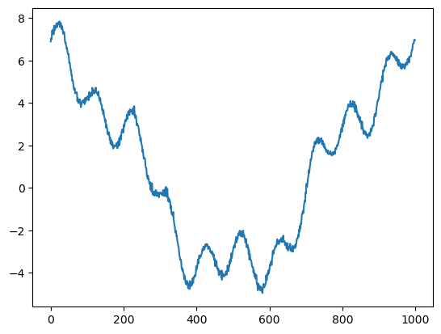
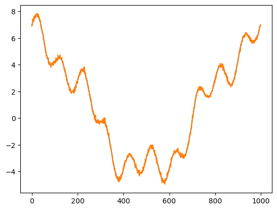
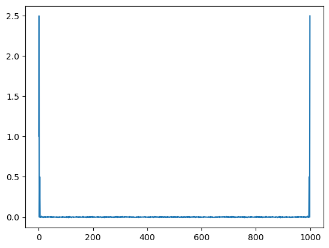

Discrete Fourier Transform#
import numpy as np
from matplotlib import pyplot as plt
def fourier(y, number_of_harmonics):
x = np.matrix(np.arange(0,np.size(y)))/np.size(y)*2*3.14159
#
#print(x)
n = np.matrix(np.arange(0,number_of_harmonics))
omega = x.T.dot(n)
cos_coef = np.matrix(y).dot(np.cos(omega))
sin_coef = np.matrix(y).dot(np.sin(omega))
cos_coef = cos_coef/np.size(y)*2
sin_coef = sin_coef/np.size(y)*2
cos_coef[0,0] = cos_coef[0,0]/2
reconstruct = cos_coef.dot(np.cos(omega).T)+sin_coef.dot(np.sin(omega).T)
return cos_coef,sin_coef, reconstruct, omega
x = np.linspace(0,2*3.14159,1000)
y = 1*np.cos(0*x)+5*np.cos(x)+np.cos(4*x)+np.sin(10*x)+np.random.normal(0,0.1,1000)
plt.plot(y)
wave_number = 100
cos_coef,sin_coef,reconstruct, omega = fourier(y,wave_number)
plt.figure()
plt.contourf(np.cos(omega))
# plt.scatter(np.arange(0,wave_number),np.array(cos_coef),s=40)
# plt.scatter(np.arange(0,wave_number),np.array(sin_coef),s=40)
plt.figure()
plt.plot(reconstruct[0,:].T)
plt.plot(y)
print('cos coef=',cos_coef)
print('sin coef=',sin_coef)
plt.figure()
plt.plot(cos_coef)
cos coef= [[ 1.00484299e+00 4.99664601e+00 2.23304935e-04 1.82861951e-03
9.98936701e-01 1.52115282e-03 -7.16743817e-03 3.28522950e-03
6.47948632e-04 5.59208280e-03 2.17408958e-02 5.20159364e-04
3.84636113e-03 -1.72438998e-03 1.32537349e-03 -1.76227977e-03
-4.49119437e-03 -9.32134391e-03 3.75966706e-03 -5.61211765e-03
-3.83054625e-03 1.15563591e-03 7.18272109e-03 1.21883230e-03
-1.40825052e-03 5.97866558e-03 -4.96725573e-03 -1.06543805e-03
1.07213700e-03 -1.79673202e-03 1.27610183e-03 4.38584387e-03
7.18247924e-03 -5.26338641e-03 5.32059605e-03 6.27947055e-03
-1.28165192e-03 -1.46262546e-03 4.06772598e-03 3.27772483e-03
3.37722018e-03 1.55687652e-03 4.61778010e-03 -7.19826279e-04
8.35109580e-03 -7.35220675e-03 -6.13545848e-03 8.45986242e-03
-5.37192292e-03 5.07782130e-05 -7.35167361e-04 -4.80967892e-03
7.76614501e-04 -7.21289205e-03 3.24255180e-03 3.57333478e-03
9.95387250e-05 1.73092572e-03 -1.85753075e-03 6.35418431e-04
3.13640743e-05 1.60707206e-03 -8.89556683e-04 -3.85683860e-03
-2.97039958e-03 -4.58712101e-03 4.87878055e-03 -2.00431968e-03
-6.05583152e-03 6.51928572e-04 -5.28838987e-03 -9.51080450e-03
-4.15644650e-03 -2.42512054e-03 2.94976076e-03 -3.82321660e-03
-7.17382656e-03 3.97500483e-03 -1.83368603e-03 -1.67119858e-03
-9.85339524e-04 4.27803324e-04 -1.78579807e-03 1.30284401e-03
-1.36244065e-03 -7.09896809e-03 -4.96282632e-03 6.98356849e-03
-9.93545856e-04 7.72574023e-03 -3.31578592e-03 -3.35168485e-03
-2.41294762e-03 9.84451613e-04 -2.35177971e-03 -6.49756589e-03
1.46084085e-04 -2.05166737e-03 -3.80185652e-03 -3.15911000e-03]]
sin coef= [[ 0.00000000e+00 -1.44310495e-02 9.85433812e-04 -2.91116929e-04
-1.31935073e-02 6.35657015e-03 -2.65615499e-03 1.49551389e-03
2.65300519e-05 3.75727607e-03 9.93234663e-01 -1.63223323e-02
-1.07791531e-02 -9.65351143e-03 -3.54831956e-03 5.95845112e-04
5.22449422e-04 -5.36582196e-03 2.50816532e-03 -1.38822644e-02
4.32501819e-04 -1.06466988e-02 -3.55181319e-03 -6.21500860e-03
4.95912289e-04 4.93952540e-03 2.87532163e-04 1.65795804e-03
5.59390240e-04 -8.11428605e-04 -1.26096007e-03 7.98035022e-05
1.48847946e-03 2.62606982e-03 -2.80896377e-03 3.27755986e-03
-2.24651534e-03 -6.80901496e-03 1.28671534e-03 -4.34687272e-03
-1.26805682e-03 5.36203027e-03 1.73461038e-03 2.73133473e-03
-2.72102586e-03 4.90165761e-03 3.75847575e-03 3.69024638e-03
8.42853622e-04 -1.34269886e-03 -5.40965375e-03 -3.44472267e-03
1.84232280e-03 -2.69653649e-03 -3.92362194e-03 -7.78977348e-03
-5.00340252e-03 2.74881219e-03 3.07015376e-03 2.46110405e-03
-3.62623140e-04 -2.37318933e-03 -2.30553961e-03 6.99294617e-03
-2.64169134e-03 -7.14499828e-03 -2.96684348e-03 -1.70124600e-03
-6.03822721e-03 -4.96058943e-03 3.83497960e-03 1.91983367e-04
-1.32947090e-04 7.67220484e-04 2.04054778e-03 -1.94183407e-03
-3.70857899e-03 2.66075514e-04 -3.54547942e-03 -3.08969566e-03
4.06598432e-03 -4.34891053e-03 -1.72390934e-03 -3.51935874e-03
6.58969627e-03 -6.03442221e-03 1.37439056e-03 3.33863484e-03
-1.90178259e-03 6.58611901e-03 -7.43548208e-04 7.34416453e-04
6.99984747e-04 7.41536490e-03 -5.59311561e-03 1.68134248e-04
-3.77558699e-03 -2.90423964e-03 -3.59607254e-03 -1.83061857e-03]]
[<matplotlib.lines.Line2D at 0x11f1af8b0>,
<matplotlib.lines.Line2D at 0x11f1af9d0>,
<matplotlib.lines.Line2D at 0x11f1afaf0>,
<matplotlib.lines.Line2D at 0x11f1afc10>,
<matplotlib.lines.Line2D at 0x11f1afd30>,
<matplotlib.lines.Line2D at 0x11f1afe50>,
<matplotlib.lines.Line2D at 0x11f1aff70>,
<matplotlib.lines.Line2D at 0x11f1af850>,
<matplotlib.lines.Line2D at 0x11f1bc1f0>,
<matplotlib.lines.Line2D at 0x11f1bc310>,
<matplotlib.lines.Line2D at 0x11f1bc430>,
<matplotlib.lines.Line2D at 0x11f1bc550>,
<matplotlib.lines.Line2D at 0x11f1bc670>,
<matplotlib.lines.Line2D at 0x11f1bc790>,
<matplotlib.lines.Line2D at 0x11f1bc8b0>,
<matplotlib.lines.Line2D at 0x11f1bc9d0>,
<matplotlib.lines.Line2D at 0x11f1bcaf0>,
<matplotlib.lines.Line2D at 0x11f1bcc10>,
<matplotlib.lines.Line2D at 0x11f1bcd30>,
<matplotlib.lines.Line2D at 0x11f1bce50>,
<matplotlib.lines.Line2D at 0x11f1bcf70>,
<matplotlib.lines.Line2D at 0x11f1bc0d0>,
<matplotlib.lines.Line2D at 0x11f1c41f0>,
<matplotlib.lines.Line2D at 0x11f1c4310>,
<matplotlib.lines.Line2D at 0x11f1c4430>,
<matplotlib.lines.Line2D at 0x11f1c4550>,
<matplotlib.lines.Line2D at 0x11f1c4670>,
<matplotlib.lines.Line2D at 0x11f1c4790>,
<matplotlib.lines.Line2D at 0x11f1c48b0>,
<matplotlib.lines.Line2D at 0x11f1c49d0>,
<matplotlib.lines.Line2D at 0x11f1c4af0>,
<matplotlib.lines.Line2D at 0x11f1c4c10>,
<matplotlib.lines.Line2D at 0x11f1c4d30>,
<matplotlib.lines.Line2D at 0x11f1c4e50>,
<matplotlib.lines.Line2D at 0x11f1c4f70>,
<matplotlib.lines.Line2D at 0x11f1c40d0>,
<matplotlib.lines.Line2D at 0x11f0441f0>,
<matplotlib.lines.Line2D at 0x11f044310>,
<matplotlib.lines.Line2D at 0x11f044430>,
<matplotlib.lines.Line2D at 0x11f044550>,
<matplotlib.lines.Line2D at 0x11f044670>,
<matplotlib.lines.Line2D at 0x11f044790>,
<matplotlib.lines.Line2D at 0x11f0448b0>,
<matplotlib.lines.Line2D at 0x11f0449d0>,
<matplotlib.lines.Line2D at 0x11f044af0>,
<matplotlib.lines.Line2D at 0x11f044c10>,
<matplotlib.lines.Line2D at 0x11f044d30>,
<matplotlib.lines.Line2D at 0x11f044e50>,
<matplotlib.lines.Line2D at 0x11f044f70>,
<matplotlib.lines.Line2D at 0x11f0440d0>,
<matplotlib.lines.Line2D at 0x11f04c1f0>,
<matplotlib.lines.Line2D at 0x11f04c310>,
<matplotlib.lines.Line2D at 0x11f04c430>,
<matplotlib.lines.Line2D at 0x11f04c550>,
<matplotlib.lines.Line2D at 0x11f04c670>,
<matplotlib.lines.Line2D at 0x11f04c790>,
<matplotlib.lines.Line2D at 0x11f04c8b0>,
<matplotlib.lines.Line2D at 0x11f04c9d0>,
<matplotlib.lines.Line2D at 0x11f04caf0>,
<matplotlib.lines.Line2D at 0x11f04cc10>,
<matplotlib.lines.Line2D at 0x11f04cd30>,
<matplotlib.lines.Line2D at 0x11f04ce50>,
<matplotlib.lines.Line2D at 0x11f04cf70>,
<matplotlib.lines.Line2D at 0x11f04c0d0>,
<matplotlib.lines.Line2D at 0x11f0551f0>,
<matplotlib.lines.Line2D at 0x11f055310>,
<matplotlib.lines.Line2D at 0x11f055430>,
<matplotlib.lines.Line2D at 0x11f055550>,
<matplotlib.lines.Line2D at 0x11f055670>,
<matplotlib.lines.Line2D at 0x11f055790>,
<matplotlib.lines.Line2D at 0x11f0558b0>,
<matplotlib.lines.Line2D at 0x11f0559d0>,
<matplotlib.lines.Line2D at 0x11f055af0>,
<matplotlib.lines.Line2D at 0x11f055c10>,
<matplotlib.lines.Line2D at 0x11f055d30>,
<matplotlib.lines.Line2D at 0x11f055e50>,
<matplotlib.lines.Line2D at 0x11f055f70>,
<matplotlib.lines.Line2D at 0x11f0550d0>,
<matplotlib.lines.Line2D at 0x11f1e0910>,
<matplotlib.lines.Line2D at 0x11f05a1f0>,
<matplotlib.lines.Line2D at 0x11f05a310>,
<matplotlib.lines.Line2D at 0x11f05a430>,
<matplotlib.lines.Line2D at 0x11f05a550>,
<matplotlib.lines.Line2D at 0x11f05a670>,
<matplotlib.lines.Line2D at 0x11f05a790>,
<matplotlib.lines.Line2D at 0x11f05a8b0>,
<matplotlib.lines.Line2D at 0x11f05a9d0>,
<matplotlib.lines.Line2D at 0x11f05aaf0>,
<matplotlib.lines.Line2D at 0x11f05ac10>,
<matplotlib.lines.Line2D at 0x11f05ad30>,
<matplotlib.lines.Line2D at 0x11f05ae50>,
<matplotlib.lines.Line2D at 0x11f05af70>,
<matplotlib.lines.Line2D at 0x11f05a0d0>,
<matplotlib.lines.Line2D at 0x11f0621f0>,
<matplotlib.lines.Line2D at 0x11f062310>,
<matplotlib.lines.Line2D at 0x11f062430>,
<matplotlib.lines.Line2D at 0x11f062550>,
<matplotlib.lines.Line2D at 0x11f062670>,
<matplotlib.lines.Line2D at 0x11f062790>,
<matplotlib.lines.Line2D at 0x11f0628b0>]



def dft(y):
y = np.asarray(y, dtype=float)
N = y.shape[0]
n = np.arange(N)
k = n.reshape((N, 1))
M = np.exp(-2j * np.pi * k * n / N)
return np.dot(M, y)/np.size(y)
plt.plot(dft(y))
y_hat = np.matrix(dft(y))
print(y_hat.dot((y_hat.conjugate()).T))
print(np.var(y))
[[14.49527137+0.j]]
13.485561930674542
/Users/Shared/miniconda3/envs/jupyterbook/lib/python3.9/site-packages/matplotlib/cbook.py:1762: ComplexWarning: Casting complex values to real discards the imaginary part
return math.isfinite(val)
/Users/Shared/miniconda3/envs/jupyterbook/lib/python3.9/site-packages/matplotlib/cbook.py:1398: ComplexWarning: Casting complex values to real discards the imaginary part
return np.asarray(x, float)

Gibbs phenomenon#
y = np.cos(0*x)+5*np.cos(x)+np.cos(4*x)+np.sin(10*x)
plt.plot(dft(y)[0:10],'k')
# maskout the data by half
y[0:500] = 0
plt.plot(dft(y)[0:10]*2)
[<matplotlib.lines.Line2D at 0x11f7d49a0>]

Fast Fourier Transform#
import numpy as np
def fft(x):
N = len(x)
if N <= 1:
return x
even = fft(x[0::2])
odd = fft(x[1::2])
T = [np.exp(-2j * np.pi * k / N) * odd[k] for k in range(N // 2)]
return [even[k] + T[k] for k in range(N // 2)] + \
[even[k] - T[k] for k in range(N // 2)]
def fft_recursive(x):
N = len(x)
if N % 2 > 0:
raise ValueError("Length of input must be a power of 2")
elif N <= 32:
return fft(x)
else:
even = fft_recursive(x[0::2])
odd = fft_recursive(x[1::2])
T = [np.exp(-2j * np.pi * k / N) * odd[k] for k in range(N // 2)]
return [even[k] + T[k] for k in range(N // 2)] + \
[even[k] - T[k] for k in range(N // 2)]
def main():
x = np.random.random(1024)
#print("Input sequence:", x)
y = fft_recursive(x)
#print("FFT result:", y)
if __name__ == "__main__":
main()
def FFT(x):
"""
A recursive implementation of
the 1D Cooley-Tukey FFT, the
input should have a length of
power of 2.
"""
N = len(x)
if N == 1:
return x
else:
X_even = FFT(x[::2])
X_odd = FFT(x[1::2])
factor = np.exp(-2j*np.pi*np.arange(N)/ N)
X = np.concatenate(\
[X_even+factor[:int(N/2)]*X_odd,
X_even+factor[int(N/2):]*X_odd])
return X
# sampling rate
sr = 128
# sampling interval
ts = 1.0/sr
t = np.arange(0,1,ts)
freq = 1.
x = 3*np.sin(2*np.pi*freq*t)
freq = 4
x += np.sin(2*np.pi*freq*t)
freq = 7
x += 0.5* np.sin(2*np.pi*freq*t)
plt.figure(figsize = (8, 6))
plt.plot(t, x, 'r')
plt.ylabel('Amplitude')
plt.show()

%timeit X=FFT(x)
%timeit dft(x)
# calculate the frequency
N = len(X)
n = np.arange(N)
T = N/sr
freq = n/T
plt.figure(figsize = (12, 6))
plt.subplot(121)
plt.stem(freq, abs(X), 'b', \
markerfmt=" ", basefmt="-b")
plt.xlabel('Freq (Hz)')
plt.ylabel('FFT Amplitude |X(freq)|')
# Get the one-sided specturm
n_oneside = N//2
# get the one side frequency
f_oneside = freq[:n_oneside]
# normalize the amplitude
X_oneside =X[:n_oneside]/n_oneside
plt.subplot(122)
plt.stem(f_oneside, abs(X_oneside), 'b', \
markerfmt=" ", basefmt="-b")
plt.xlabel('Freq (Hz)')
plt.ylabel('Normalized FFT Amplitude |X(freq)|')
plt.tight_layout()
plt.show()
598 µs ± 4.08 µs per loop (mean ± std. dev. of 7 runs, 1,000 loops each)
376 µs ± 1.71 µs per loop (mean ± std. dev. of 7 runs, 1,000 loops each)
---------------------------------------------------------------------------
NameError Traceback (most recent call last)
Cell In[7], line 4
2 get_ipython().run_line_magic('timeit', 'dft(x)')
3 # calculate the frequency
----> 4 N = len(X)
5 n = np.arange(N)
6 T = N/sr
NameError: name 'X' is not defined
import numpy as np
def fft(x):
N = len(x)
if N <= 1:
return x
even = fft(x[::2])
odd = fft(x[1::2])
T = [np.exp(-2j * np.pi * k / N) * odd[k] for k in range(N // 2)]
return [even[k] + T[k] for k in range(N // 2)] + \
[even[k] - T[k] for k in range(N // 2)]
import numpy as np
import matplotlib.pyplot as plt
# Generate a sinusoidal signal with noise
t = np.linspace(0, 1, 1000)
f_signal = 5 # Frequency of the signal
signal = np.sin(2 * np.pi * f_signal * t) + 0.5 * np.random.randn(1000) # Adding noise
# Compute FFT
fft_result = np.fft.fft(signal)
frequencies = np.fft.fftfreq(len(signal), t[1] - t[0])
# Plot the original signal
plt.figure(figsize=(10, 6))
plt.subplot(2, 1, 1)
plt.plot(t, signal)
plt.title('Original Signal')
plt.xlabel('Time')
plt.ylabel('Amplitude')
# Plot the FFT result (scaled properly)
plt.subplot(2, 1, 2)
plt.plot(frequencies, np.abs(fft_result) / len(signal)) # Normalize FFT by the length of the signal
plt.title('FFT of Signal')
plt.xlabel('Frequency')
plt.ylabel('Magnitude')
plt.xlim(0, 10) # Limiting x-axis to frequencies up to 10 Hz for clarity
plt.tight_layout()
plt.show()